컴퓨터응용가공산업기사 (2009-05-10 기출문제)
1과목: 기계가공법 및 안전관리
1. 공구마멸 중에서 공구날의 윗면이 칩의 마찰로 오목하게 패이는 현상을 무엇이라 하는가?
- 구성인선
- 크레이터마모
- 프랭크 마모
- 칩브레이커
(정답률: 76%)

2. 보통 선반에서 보링(boring)작업을 할 때 가장 많이 사용 되는 공구는?
- 바이트(bite)
- 엔드밀(end mill)
- 탭(tap)
- 필터(filter)
(정답률: 56%)
3. 독일형 비니어캘리퍼스라고도 부르며, 슬라이더가 홍형으로 내측면의 측정이 가능하고, 최소 1/50㎜로 측정할 수 있는 버니어캘리퍼스는?
- M1형
- M2형
- CB형
- CM형
(정답률: 43%)
4. 선반에서 길이방향 이송, 전후방향 이송, 나사깎기 이송등의 이송장치를 가지고 있는 부분은?
- 왕복대
- 주축대
- 이송변환기어박스
- 리드 스크루
(정답률: 69%)
5. 피복 초경합금의 피복재로 사용되지 않는 것은?
- TiC
- TiN
- Al2O3
- SiC
(정답률: 49%)
6. 그림에서 X는 18㎜, 핀의 지름이 ø6㎜ 이면 A 값은 약 몇 ㎜ 인가?
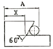
- 23.196
- 26.196
- 31.392
- 34.392
(정답률: 66%)
7. 회전하는 상자 속에 공작물과 숫돌 입자, 공작액, 콤파운드(compound) 등을 함께 넣어 공작물을 입자와 충돌시켜 매끈한 가공면을 얻는 가공방법은?
- 숏 피닝(shot peening)
- 배럴 다듬질(barrel finishing)
- 버니싱(burnishing)
- 롤로(roller) 가공
(정답률: 66%)
8. 연삭숫돌 바퀴의 표시 “WA 46 J 4 V”에서 ‘4’가 나타내는 것은?
- 입도
- 결합도
- 조직
- 결합제
(정답률: 52%)
9. 사고 발생이 많이 일어나는 것에서 점차로 적게 일어나는 것의 순서로 옳은 것은?
- 불안전한 조건 → 불가항력 → 불안전한 행위
- 불안전한 행위 → 불가항력 → 불안전한 조건
- 불안전한 행위 → 불안전한 조건 → 불가항력
- 불안전한 조건 → 불안전한 행위 → 불가항력
(정답률: 54%)
10. 여러대의 NC공작기계를 1대의 컴퓨터에 연결시켜 작업을 수행하는 생산시스템은?
- FMS
- ANC
- DNC
- CNC
(정답률: 83%)
11. 절삭속도 90m/min, 커터의 날 수 10개, 밀링 커터의 지름을 100mm 1개의 날 당 이송을 0.⑤mm 라 할 때 테이블의 오송속도는 약 mm/min 인가?
- 133.3
- 143.3
- 153.7
- 163.7
(정답률: 67%)
12. 보통선반 사용시 주의해야 할 안전사항 중 맞는 것은?
- 바이트를 교환할 때는 기계를 정지시키지 않아도 된다.
- 나사가공이 끝나면 반드시 하프너트를 풀어 놓는다.
- 바이트는 가급적 길게 설치한다.
- .저속운전 중에는 주축속도의 변환을 해도 된다.
(정답률: 79%)
13. 공작기계의 기본운동이 아닌 것은?
- 위치조정운동
- 급속귀환운동
- 이송운동
- 절삭운동
(정답률: 76%)
14. 밀링에서 작업할 수 없는 것은?
- 나선홈 가공
- 기어 가공
- 널링 가공
- 키홈 가공
(정답률: 83%)
15. 밀링 수직축 장치에 관한 설명으로 틀린 것은?
- 밀링 머신의 부속장치의 일종이다.
- 수평 및 만능 밀링머신에서 직립 밀링가공을 할 수 있다록 베드면에 장치한다.
- 일감에 따라 요구되는 각도로 선회시켜 사용할 수 있다.
- 수평방향의 스핀들 회전을 기어를 거쳐 수직방향으로 전환시키는 장치이다.
(정답률: 35%)
16. 연강을 쇠톱으로 절단하는 방법으로 틀린 것은?
- 쇠톱으로 절단을 할 때 톱날의 왕복 횟수는 1분에 약 50 ~ 60회가 적당하다.
- 쇠톱을 앞으로 밀 때 균등한 절삭압력을 준다.
- 쇠톱작업을 할 때 톱날의 전체 길이를 사용하도록 한다.
- 쇠톱은 당길 때 재료가 잘리므로, 톱날의 방향은 잘리는 방향으로 고정한다.
(정답률: 50%)
17. 센터리스 연삭기에서 조정 숫돌의 주된 역할은?
- 공작물의 연삭
- 공작물의지지
- 공작물 이송
- 연삭숫돌 회전
(정답률: 32%)
18. 화재를 A급, B급, C급, D급으로 구분했을 때 전기화재는 어느 급에 해당하는가?
- A급
- B급
- C급
- D급
(정답률: 74%)
19. 기어 절삭법이 아닌 것은?
- 창성법
- 인베스먼트법
- 형판에 의한 법
- 총형공구에 의한 방법
(정답률: 75%)
20. 절삭저항의 3분력에 속하지 않는 것은?
- 주분력
- 이송분력
- 배분력
- 상대분력
(정답률: 87%)
2과목: 기계설계 및 기계재료
21. 선철을 제조하는 과정에서 연료 겸 환원제로 사용하는 것은?
- 석회석
- 망간
- 내화물
- 코크스
(정답률: 53%)
22. 다음 중 기계구조용 재료로 가장 많이 사용되는 2원 합금 재료는?
- 알루미늄합금
- 고속도강
- 스테인리스강
- 탄소강
(정답률: 53%)
23. 탄소강에 특스원소를 첨가할 경우 담금질성이 향상되는데 효과가 큰 것부터 나열된 것은?
- P ＞ Mn ＞ Cu ＞ Si
- Cu ＞ Si ＞ P ＞ Mn
- Mn ＞ P ＞ Si ＞ Cu
- Si ＞ Mn ＞ P ＞ Cu
(정답률: 32%)
24. 주철에 함유된 원소 중 Mn 이 소량일 때 Fe 와 화합하여 백주철화를 촉진하는 원소는?
- Si
- Cu
- S
- C
(정답률: 29%)
25. 강의 조직 중에서 오스테나이트 조직의 고용체는?
- α 고용체
- Fe3C
- δ 고용체
- γ 고용체
(정답률: 40%)
26. 다음 중 구리의 전도성을 가장 많이 감소시키는 원손?
- P
- Ag
- Zn
- Cd
(정답률: 40%)
27. 니켈 60~70% 정도로 함유한 Ni-Cu계의 합금으로, 내식성이 좋으므로 화학공업용 재료로 많이 쓰이는 재료는?
- 톰백
- 알코아
- Y합금
- 모넬메탈
(정답률: 37%)
28. 실제로 액체 금속이 응고할 때에는 반드시 융점의 온도에서 응고가 시작되는 일은 적고, 용융점보다 낮은 온도에서 응고가 시작된다. 이 현상을 무엇이라 하는가?
- 서냉
- 급냉
- 과냉
- 급냉과 과냉의 겹침
(정답률: 39%)
29. 고온에서 다른 재료에 비해 비강도가 우수하기 때문에 항공기 외판 등에 사용하는 재료는?
- Ni
- Cr
- W
- Ti
(정답률: 57%)
30. 탄소강에서 탄소량의 증가에 따른 성질변화에 대한 설명으로 올바른 것은?
- 비중, 열팽창계수가 증가한다.
- 비열, 전기저항이 감소한다.
- 경도가 증가한다.
- 연신율이 증가한다.
(정답률: 50%)
31. 관이음에서 방향을 바꾸는 경우 사용하는 관 이음쇠는?
- 소켓
- 니플
- 엘보
- 유니언
(정답률: 64%)
32. 그림과 같은 아이 볼트에 27 kN의 하중(W)이 걸릴 때 사용가능한 나사의 최소 크기는? (단, 나사부 허용인잔응력을 60 MPa로 한다.)
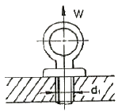
- M24
- M30
- M36
- M45
(정답률: 54%)
33. 기어를 사용한 동력전달의 일반적인 특징으로 거리가 먼 것은?
- 큰 동력을 일정한 속도비로 전달할 수 있다.
- 전동효율이 좋다.
- 외부 충격에 강하다.
- 소음과 진동이 발생한다.
(정답률: 60%)
34. 볼베어링의 수명에 대한 설명으로 맞는 것은?
- 반지름방향 동등가하중의 3배에 비례한다.
- 반지름방향 동등가하중의 3승에 비례한다.
- 반지름방향 동등가하중의 3배에 반비례한다.
- 반지름방향 동등가하중의 3승에 반비례한다.
(정답률: 61%)
35. 정사각형의 봉에 10kN의 인장하중이 작용할 때 이 사각봉에 단면의 한 변 길이는? (단, 하중은 축방향으로 작용하며 이 때 발생한 인장 응력은 100N/㎝2이다.)
- 10㎝
- 20㎝
- 30㎝
- 40㎝
(정답률: 54%)
36. 질량 1㎏의 물체가 1m/s2의 가속도로 움직일 수 있다록 가하는 힘은?
- 1 [N]
- 1 [dyne]
- 1 [kgf]
- 1 [kg]
(정답률: 51%)
37. 100 N·m의 굽힘 모멘트를 받는 중실축의 지름은 약 몇 ㎜ 이상이어야 하는가? (단, 중실축의 허용굽힘응력은 98 MPa이다.)
- 12㎜
- 18㎜
- 22㎜
- 32㎜
(정답률: 25%)
38. 미끄럼 베어링 재료의 구비조건으로 틀린 것은?
- 마찰저항이 클 것
- 내식성이 높을 것
- 피로한도가 높을 것
- 열전도율이 높을 것
(정답률: 61%)
39. 재료의 기준강도(인장강도)가 400N/㎜2이고, 허용응력이 100N/㎜2일 때 안전율은?
- 0.25
- 0.5
- 2
- 4
(정답률: 63%)
40. 평벨트 풀리의 지름이 600㎜, 축의 지름이 50㎜라 하고, 풀리를 폭(b) x 높이(h) = 8㎜ x 7㎜의 묻힘키로 축에 고정하여 벨트 장력에 의해 풀리의 외주에 2kN의 힘이 작용한다면, 키의 길이는 몇 ㎜ 이상이어야 하나? (단, 키의 허용전단응력은 50 MPa로 하고, 허용전단응력만을 고려하여 계산한다.)
- 50
- 60
- 70
- 80
(정답률: 45%)
3과목: 컴퓨터응용가공
41. CNC 가공에서 공구의 위치를 나태나는 좌표값을 나타내는 용어로 옳은 것은?
- CC point
- CL point
- CNC point
- CQ point
(정답률: 64%)
42. CGS(constructive solid geometry) 솔리드 모델을 구성하는 일반적은 기본 입체(primitive)라고 할 수 없는 것은?
- Sphere
- Cylinder
- Edge
- Cone
(정답률: 66%)
43. 솔리드 모델의 특징에 속하지 않는 것은?
- 은선 제거가 가능하다.
- 물리적 성질의 계산이 가능하다.
- 간섭 체크가 불가능하다.
- 형상을 절단하여 단면도 작성이 용이하다.
(정답률: 72%)
44. CPU와 메인메모리(RAM)사이에 위치하며 CPU와 메인메모리 사이에서 처리될 자료를 효율적으로 이송할 수 있도록 하여 자료처리 속도를 증가시키는 것은?
- coprocessor
- cache memory
- ROM
- BIOS
(정답률: 66%)
45. 서피스 모델링(surface modeling)방식으로 정의된 곡면의 일부를 절단하면 일반적으로 어느 형태의 도형이 되는가?
- 점
- 평면
- 곡면
- 곡선
(정답률: 61%)
46. CAD/CAM 시스템의 하드웨어 중 출력장치는?
- 플로터
- 스캐너
- 라이트 펜
- 터치 패드
(정답률: 70%)
47. 그림과 같이 변환시키려면 d의 값으로 올바른 것은?
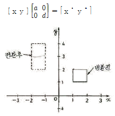
- 1
- 2
- -1
- -2
(정답률: 52%)
48. NURBS 곡선의 일반적인 특징에 대한 설명으로 틀린 것은?
- 일반적인 B-spline 곡선보다 설계자우도가 높다.
- 일반적인 B-spline 곡선과 마찬가지로 원, 타원을 근사하게 표현한다.
- 자유 곡선을 하나의 방정식으로 나타낼 수 있다.
- 조정점에서 동차 좌표를 포함하여 네 개의 자유도가 허용된다.
(정답률: 34%)
49. IGES 파일의 구조가 아닌 것은?
- Start Section
- Local Section
- Directory Entry Section
- Parameter Data Section
(정답률: 40%)
50. 네 개의 조정점으로 정의된 베지어 곡선(Bezier curve)에 대한 설명으로 틀린 것은?
- 항상 조정점에 의해 생성된 다각형의 최외곽점에 의한 블록포(convex hull)의 내부에 포함된다.
- n개의 조정점에 의해 생성된 곡선은 (n+1)차 곡선이다.
- 번스타인 다항식은 베지어 곡선을 정의하기 위한 블렌딩 함수로 사용된다.
- 조정점 한 개의 위치를 변화시키면 곡선 세그먼트 전체의 형상이 변화한다.
(정답률: 67%)
51. 다음 그림에서 벡터 N은 블록 바깥쪽으로의 법선벡터이며, 벡터 M은 블록 면 위에 점에서 관찰자로의 벡터이다. 벡터 M과 N의 관계를 이용하여 면의 가시성에 대하여 올바르게 설명한 것은?
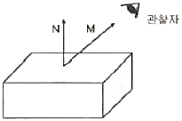
- M · N＜ 0 이면, 면이 선으로 표현된다.
- M · N ＞ 0 이면, 면이 가시적이다.
- M × N＜ 0 이면, 면이 선으로 표현된다.
- M × N = 0 이면, 면이 비가시적이다.
(정답률: 43%)
52. 다음의 경계 모델링(Boundary Modeling) 기능 중에서 기존의 주어진 입체의 형상을 변화시켜 가면서 원하는 형상을 모델링하는 변형기능을 통칭하여 일컫는 용어는?
- 트위킹(tweaking)
- 스키닝(skinning)
- 리프팅(lifting)
- 스위핑(sweeping)
(정답률: 40%)
53. 2차원에서 변환 행렬 TH(3×3)은 크게 4부분으로 나누어 진다. 다음 설명 중 틀린 것은?
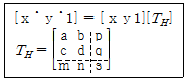
- a,b,c,d는 회전(rotation), 스케일링(scaling) 등에 관계된다.
- m,n은 이동(translation)에 관계된다.
- s는 전체적인 스케일링(overall scaling)에 영향을 미친다.
- p,q는 대칭변화(reflection)에 관계된다.
(정답률: 49%)
54. CAD 데이터 교환을 위한 표준파일형식 중 형상데이터 뿐만 아니라 부품표(BCM), 재료, NC 가공데이터 등 많은 종류의 데이터를 포함할 수 있는 것은?
- DXF
- IGES
- STEP
- PHIGS
(정답률: 33%)
55. 다음 곡선(curve)의 특징에 대한 설명으로 틀린 것은?
- B-spilne 곡선은 1개의 정점 변화가 곡선 전체에 영향을 미친다.
- Bezier 곡선은 반드시 주어진 시작점과 끝점을 통과한다.
- Bezier 곡선은 다각형의 꼭지점 순서가 거꾸로 되어도 같은 곡선이 생성되어야 한다.
- B-spilne 곡선은 하나의 꼭짓점을 옮겨도 곡선 전체의 연속성이 보장 된다.
(정답률: 40%)
56. 바닥면이 없는 원뿔을 중심축과 평행하게 단면 했을 때 생기는 원추 곡선(conic section은?
- 원
- 타원
- 포물선
- 쌍곡선
(정답률: 28%)
57. 화면에 나타난 데이터를 확대하여 데이터의 일부부 만을 스크린에 나타낼 때 상당부분이 viewport를 벗어나는데 이와 같이 일정한 영역을 벗어나는 부분을 잘라버리는 것을 무엇이라 하는가?
- 윈도잉(windowing)
- 클리핑(cllpping)
- 매핑(mapping)
- 패닝(panning)
(정답률: 60%)
58. DNC 운전시 데이터의 전송속도를 나타내는 것은?
- CPS
- IPS
- BPS
- MIPS
(정답률: 74%)
59. 하나의 입체를 기하 요소(geometric entity)와 위상 요소(topological entity)를 이용하여 표현하는 솔리드 모델링 방법은?
- CSG 방식
- Sweep 방식
- FEM 방식
- b-rep 방식
(정답률: 39%)
60. 일반적으로 3축 가공과 비교한 5축 가공의 특징이 아닌 것은?
- 공구 접근성이 뛰어나다.
- 파트 프로그램 작성이 수월하다.
- 커습 양을 최소화 함으로써 가공 품질이 우수하다.
- 볼 엔드밀 사용시 절삭성이 좋은 공구 자세를 취할 수 있다.
(정답률: 74%)
4과목: 기계제도 및 CNC공작법
61. 스퍼 기어 A,B가 그림과 같이 조립되어 있을 때 이에 대한 설명으로 틀린 것은?
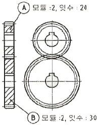
- A기어의 이끝원 지름은 ø44 이다.
- B기어의 피치원 지름은 ø60 이다.
- 축간 중심거리는 54 이다.
- 전체 이높이는 약 4.3 이다.
(정답률: 42%)
62. 가공 방법의 약호 중에서 다듬질 가공인 스크레이핑 가공의 약호인 것은?
- FS
- FSU
- CS
- FSD
(정답률: 77%)
63. 베어링 호칭 번호 6308 Z NR에서 08 이 나타내는 뜻은?
- 실드기호
- 안지름 번호
- 베어링 계열기호
- 레이스 형상 기호
(정답률: 78%)
64. 조립 전의 구멍의 치수가 100
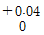
, 축의 치수가 100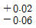
일 때 최대 틈새는?- 0.02
- 0.06
- 0.10
- 0.04
(정답률: 66%)
65. 보기 입체도의 각 제 3각 정투상도에서 누락된 우측면도로 가장 적합한 것은?
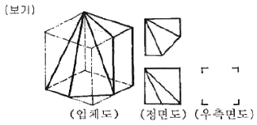
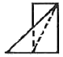
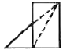
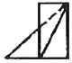
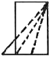
(정답률: 46%)
66. 도면에서 다음에 열거한 선이 같은 장소에 중복되었다. 어느선으로 표시하여야 하는가?
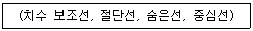
- 숨은선
- 중심선
- 치수 보조선
- 절단선
(정답률: 70%)
67. 나사 표기가 TM18 이라 되어 있을 때 이는 무슨 나사인가?
- 관용 평행나사
- 29° 사다리꼴나사
- 관용 테이퍼나사
- 30° 사다리꼴나사
(정답률: 40%)
68. 보기와 같은 입체도의 화살표 방향 투상도로 가장 적합한 것은?
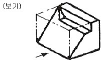
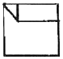
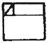
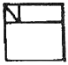
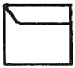
(정답률: 65%)
69. 가공 전 또는 가공 후의 모양을 표시하는 선은?
- 파단선
- 절단선
- 가상선
- 숨은선
(정답률: 68%)
70. 다음과 같은 표면거칠기 지시방법에서 λc 2.5 의 의미는?
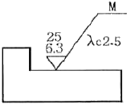
- 기준 길이 2.5 ㎜
- 컷오프값 2.5 ㎜
- 기준 길이 2.5 ㎛
- 컷오프값 2.5 ㎛
(정답률: 48%)
71. CNC 공작기계의 서보기구 형식에 해당하지 않는 것은?
- 개방회로 방식
- 반폐쇄회로 방식
- 폐쇄회로 방식
- 반개방회로 방식
(정답률: 76%)
72. CNC선반 프로그램에서 급속이송(G00)으로 A점에서 B점으로 이동하는 지령 방법으로 틀린 것은?
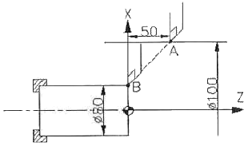
- G00 X80. Z0 ;
- G00 U-20. W-50. ;
- G00 X80. W-50. ;
- G00 U-20. Z-50. ;
(정답률: 42%)
73. CNC선반 기공 프로그램에서 “G96 S120”으로 지정된 경우 의미를 맞게 설명한 것은?
- 절삭도가 120 m/min가 되도록 공작물의 직경에 따라 주축의 회전수가 변화한다.
- 주축이 120 rpm 으로 회전하도록 한다.
- 주축이 120 rpm 보다 높은 회전수를 요구하더라도 주축은 120 rpm 이상으로 회전하지 않는다.
- 주축속도가 120 rpm 이 되면 주축을 정지시키는 것을 의미한다.
(정답률: 47%)
74. CNC선반 프로그램에서 공구기능(T) T0202를 가장 잘 설명한 것은?
- 2번 공구의 공구 보정번호 2번 수행
- 공구보정 없이 2번 공구 선택
- 2번 공구의 2번 공구보정 취소
- 2번 공구의 2번 반복 수행
(정답률: 84%)
75. 머시닝센터에서 G43으로 공구 길이보정을 수행하였다. 공구길이 보정 취소시 필요한 G코드는?
- G40
- G42
- G49
- G50
(정답률: 65%)
76. 기계 가공시의 안전 사항으로 틀린 것은?
- 척이 회전하는 도중에 일감이 튀어나오지 않도록 확실히 고정한다.
- 항상 비상 정지 버튼의 위치를 확인하고 있어야 한다.
- 기계에 공구나 가공물을 설치할 때에는 반드시 기계 정지 후 한다.
- 가공 칩은 반드시 기계 정지 후 손이나 측정기를 이용하여 제거한다.
(정답률: 87%)
77. 보조 프로그램이 끝나는 마지막 블록에 “M99 P0100 ;”을 지령하였다. 이에 대한 설명으로 맞는 것은?
- 주 프로그램의 N0100 블록으로 돌아가라는 뜻
- 주 프로그램 번호 ○0100으로 가라는 뜻
- 보조 프로그램의 N0100 블록으로 돌아가라는 뜻
- 보조 프로그램을 2번 반복 수행하라는 뜻
(정답률: 41%)
78. CNC 공작기계의 특징에 해당하지 않는 것은?
- 제품의 균일성을 향상시킬 수 있다.
- 작업자의 피로감소를 꾀할 수 있다.
- 특수공구가 필요하며 공구관리비가 증가할 수 있다.
- 제조원가 및 인건비를 줄일 수 있다.
(정답률: 78%)
79. CNC 방전기공의 특징을 잘못 설명한 것은?
- 열에 의한 변형이 적으므로 가공 정밀도가 우수하다.
- 전극으로 구리, 황동, 흑연 등을 사용하므로 성형이 용이하다.
- 강한 재료, 부도체 재료, 담금질 재료의 가공도 용이하다.
- 미세한 구멍, 얇은 두께의 재질을 가공해도 변형이 생기지 않는다.
(정답률: 57%)
80. 절삭동력이 2 kW이고, 주축회전수가 500 rpm일 때 선반에서 ø80 ㎜의 환봉을 절삭하는 절삭 주분력은 약 몇 N 인가?
- 95.5
- 955
- 90.7
- 907
(정답률: 41%)